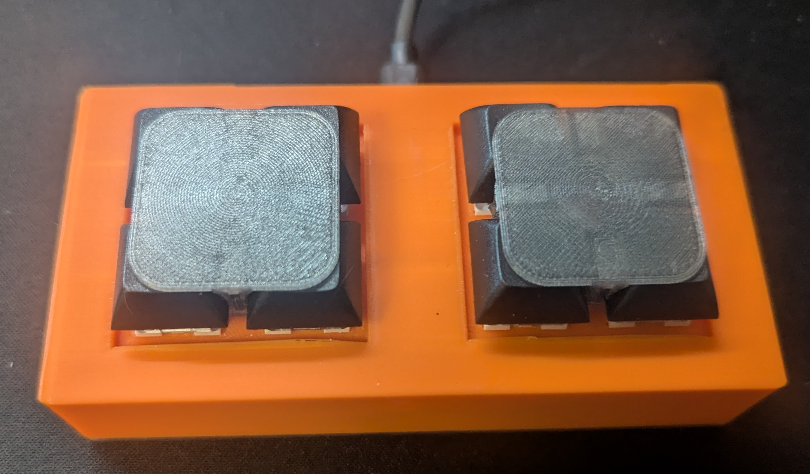
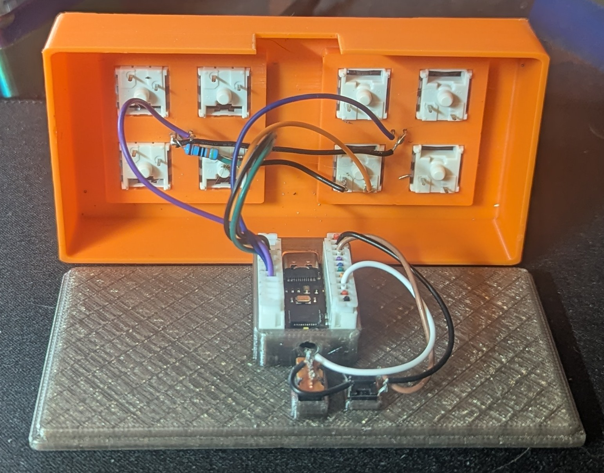

MicrophoneController
2-button USB HID microphone controller with tap-to-toggle and push-to-talk

Assembled
InternalOverview
In many games and communication apps, you can control multiple microphone channels, such as team and proximity chat. This controller solves that problem while also allowing you to push-to-talk or toggle-to-talk on multiple channels without guessing if a chat channel is currently active. The mode switch on the bottom lets you use the same hardware for either keyboard or gamepad input, depending on the app's support for each HID type.
I have also found this useful for controlling my WhisperTranscription application, as the dual buttons and tap-or-hold functionality are perfect for distinguishing between transcribing my text and issuing commands to an AI model. I have been happy with this use case, though I am considering changing the hotkeys, possibly making them configurable via the WebUSB protocol. Since this requires an external application, I am looking at hosting it in Lambda alongside this site.
Stack
Challenges
- When playing a game with a controller, having this act a keyboard was causing it change the input.
- I used AI to do this intitial implmentation of hold-or-toggle functionality, I was not working as intended so I wrote that instead.
Learnings
- Claude Code had trouble with the hold-or-toggle logic, my rewrite was much simpler as it tried to implement latching logic separately from the hold logic. I implemented a single toggle state which is much easier to read and debug.
- The dual keyboard and joystick function was interesting in that the device gets two separate USB interfaces when connected. The switch just changes which function send the input, it doesn't reinitialize the device as I originally thought it should.
Hardware
- Board: nullbits Bit-C PRO (Arduino Leonardo-compatible)
- Button 1 — D2, internal pull-up → GND
- Button 2 — D3, internal pull-up → GND
- LED 1 — D4 via 220 Ω resistor
- LED 2 — D5 via 220 Ω resistor
- Mode switch — D15 to GND = keyboard; floating = gamepad
Button Behaviour
- Tap — toggle mic on/off (keyboard: key press+release; gamepad: brief button press)
- Hold ≥ 50 ms — push-to-talk; latch active while held, cleared on release
- Mode switch — releases all outputs and resets all latch states
- Keyboard keys: Scroll Lock (btn 1), Pause (btn 2)
- Gamepad buttons: 8 and 9 (beyond standard controller layouts)